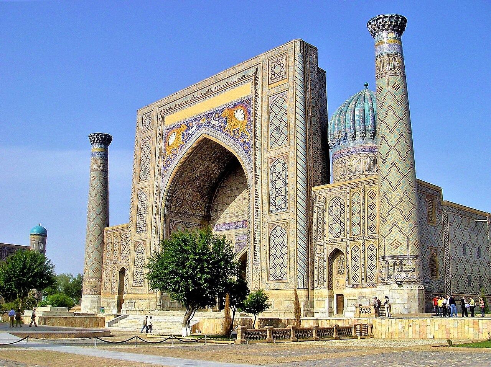

01
Samarkand
The blue city of Amir Temur: Registan, Shah-i-Zinda and the observatory of Ulugh Beg.

Issue 01 · The Silk Road
Blue domes, caravan cities and two thousand years of stories — filmed on the ground in Uzbekistan, explained for curious travelers.
Registan, Samarkand
From the editor
Uzbekistan sits at the crossroads of the old world. Merchants carried silk, paper and ideas through its oasis cities for centuries — and much of what they built is still standing. I live here, and I film it myself: no stock clips, just the real streets, the real food and the real history.
“Every city here is a chapter of the Silk Road. I want to show you how to read it.”
Destinations
The blue city of Amir Temur: Registan, Shah-i-Zinda and the observatory of Ulugh Beg.

A living museum of trading domes, madrasas and the 900-year-old Kalyan minaret.

A walled desert city frozen in time, where caravans rested before crossing the sands.
Latest on the channel